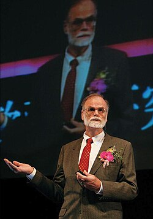
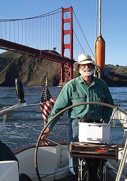

Jim Gray | |
|---|---|
 Gray in 2006 | |
| Born | James Nicholas Gray January 12, 1944[1] San Francisco, California[2] |
| Disappeared | January 28, 2007 (aged 63) Waters near San Francisco |
| Status | Declared dead in absentia January 28, 2012 (aged 68) |
| Citizenship | American |
| Education | University of California, Berkeley (BS, MS, PhD) New York University |
| Occupation | Computer scientist |
| Employers | |
| Known for | Work on database and transaction processing systems |
| Spouse(s) | Loretta (divorced), Donna Carnes (widowed) |
| Children | 1 (daughter) |
| Awards | Turing Award (1998)[3] IEEE Computer Society Charles Babbage Award (1998) |
James Nicholas Gray (1944 – declared dead in absentia 2012) was an American computer scientist who received the Turing Award in 1998 "for seminal contributions to database and transaction processing research and technical leadership in system implementation".[4]
Gray was born in San Francisco, the second child of Ann Emma Sanbrailo, a teacher, and James Able Gray, who was in the U.S. Army; the family moved to Rome, Italy, where Gray spent most of the first three years of his life; he learned to speak Italian before English. The family then moved to Virginia, spending about four years there, until Gray's parents divorced, after which he returned to San Francisco with his mother. His father, an amateur inventor, patented a design for a ribbon cartridge for typewriters that earned him a substantial royalty stream.[2]
After being turned down for the Air Force Academy he entered the University of California, Berkeley as a freshman in 1961. To help pay for college, he worked as a co-op for General Dynamics, where he learned to use a Monroe calculator. Discouraged by his chemistry grades, he left Berkeley for six months, returning after an experience in industry he later described as "dreadful".[2] Gray earned his B.S. in engineering mathematics (Math and Statistics) in 1966.[5]
After marrying, Gray moved with his wife Loretta to New Jersey, his wife's home state; she worked as a teacher and he worked at Bell Labs on a digital simulation that was to be part of Multics. At Bell, he worked three days a week and spent two days as a Master's student at New York University's Courant Institute. After a year they traveled for several months before settling again in Berkeley, where Gray entered graduate school with Michael A. Harrison as his advisor. In 1969 he received his Ph.D. in programming languages, then did two years of postdoctoral work for IBM.[2]
While at Berkeley, Gray and Loretta had a daughter; they were later divorced. His second wife was Donna Carnes.
Gray pursued his career primarily working as a researcher and software designer at a number of industrial companies, including IBM, Tandem Computers, and DEC. He joined Microsoft in 1995 and was a Technical Fellow for the company[a] until he was lost at sea in 2007.[14]
Gray contributed to several major database and transaction processing systems. At IBM's San Jose Research Laboratory he worked on System R, the prototype relational database system that introduced SQL and became the basis for later commercial relational products. He subsequently worked on transaction processing at Tandem Computers and DEC. For Microsoft, he worked on TerraServer-USA and Skyserver.
Roger Sippl described Gray as among the "technical gods in this industry", widely respected as a neutral arbiter on standards committees.[15] His best-known achievements include:
He assisted in developing Virtual Earth.[19][20][21] He was also one of the co-founders of the Conference on Innovative Data Systems Research.

Gray, an experienced sailor, owned a 40 foot (12 m) sailboat. On January 28, 2007, he failed to return from a short solo trip to scatter his mother's ashes at the Farallon Islands near San Francisco.[22] The weather was clear, and no distress call was received, nor was any signal detected from the boat's automatic Emergency Position-Indicating Radio Beacon.
A four-day Coast Guard search using planes, helicopters, and boats found nothing.[23][24][25][26] On February 1, 2007, the DigitalGlobe satellite scanned the area[27] and the thousands of images were posted to Amazon Mechanical Turk. Students, colleagues, and friends of Gray, and computer scientists around the world formed a "Jim Gray Group" to study these images for clues. On February 16 this search was suspended,[28] and an underwater search using sophisticated equipment ended May 31.[9][29][30][31][32]
Marine search expert Bob Bilger explains that the type of boat used by Gray, a C&C 40 is vulnerable to hull damage, and can sink as quickly as in 30 seconds, also taking any equipment with it, not leaving any loose debris.[33]
The University of California, Berkeley and Gray's family hosted a tribute on May 31, 2008.[34] Five years after the disappearance, Carnes petitioned a court to have her husband declared dead and on January 28, 2012, Gray was declared legally dead.[35][36][37]
In 2012, Carnes co-authored a paper on coping with ambiguous loss.[38] In 2014, in conjunction with the disappearance of Malaysia Airlines Flight 370, CNN interviewed Carnes.[37] At the time, she lived with her elderly mother who was suffering from dementia in Wisconsin.
Microsoft's WorldWide Telescope software was dedicated to Gray. In 2008, Microsoft Research opened Gray Systems Lab, a research center in Madison, Wisconsin, named after Jim Gray.[39]
Database conference SIGMOD confers the Jim Gray Doctoral Dissertation Award annually to doctoral candidates researching databases.[40]
Each year, Microsoft Research presents the Jim Gray eScience Award to a researcher who has made an outstanding contribution to the field of data-intensive computing.[41] Award recipients are selected for their ground-breaking, fundamental contributions to the field of eScience. Previous award winners include Alex Szalay (2007), Carole Goble (2008), Jeff Dozier (2009), Phil Bourne (2010), Mark Abbott (2011), Antony John Williams (2012), and Dr. David Lipman, M.D. (2013).
{{cite journal}}: Cite uses deprecated parameter |citeseerx= (help)
{{cite news}}: CS1 maint: deprecated archival service (link)
{kind=link}
{kind=link}